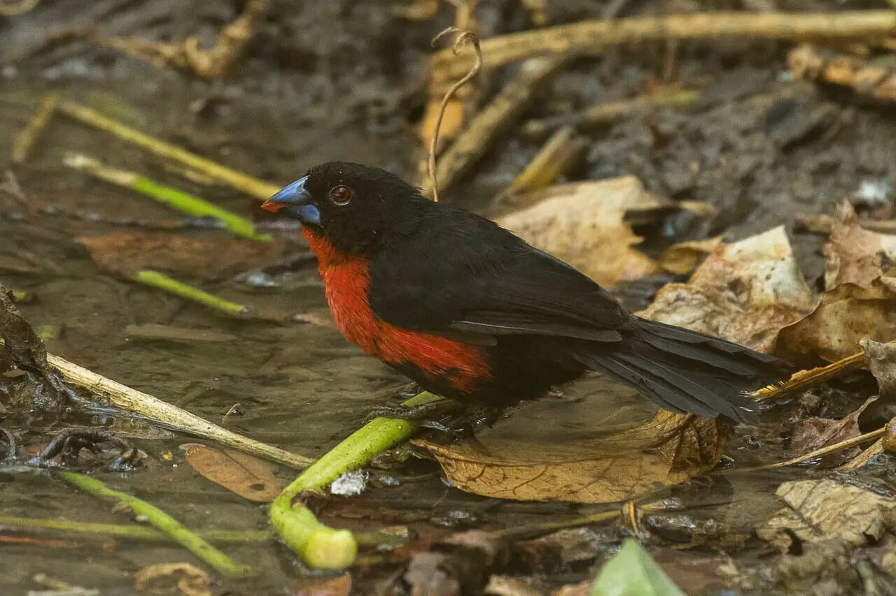
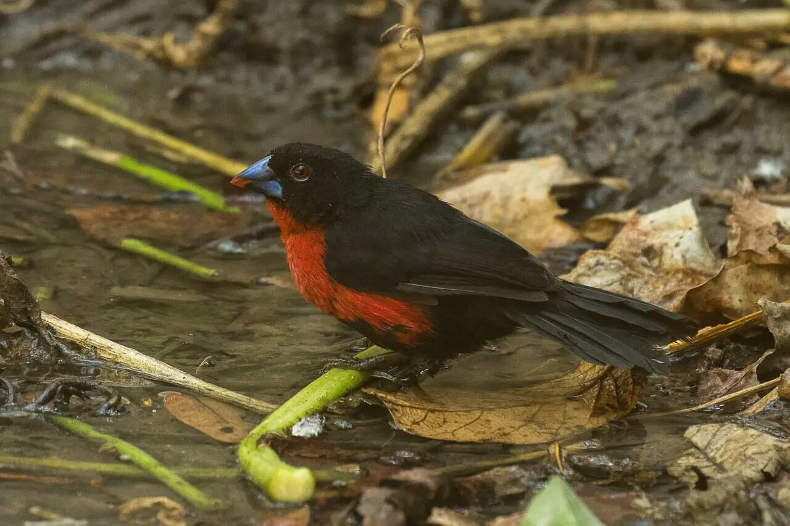
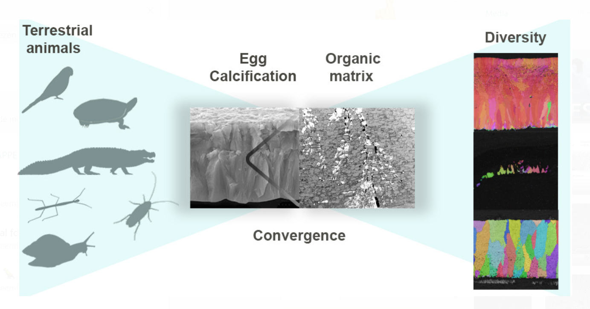
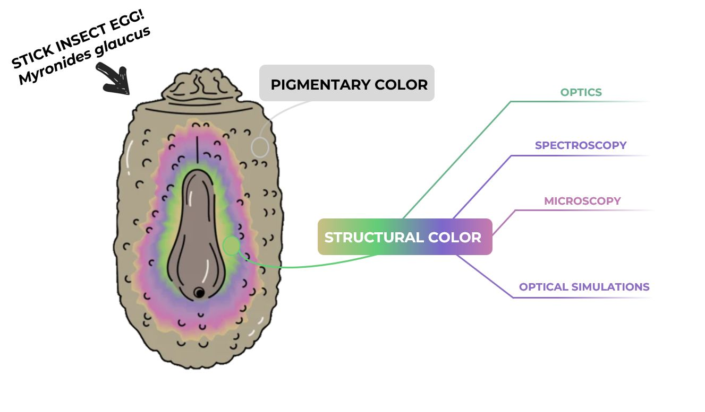
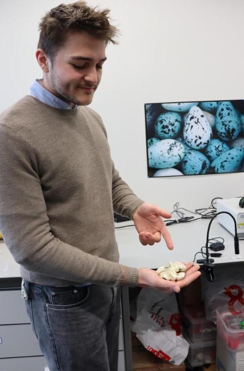

I'm an enthusiastic, highly motivated go-getter with a never-ending interest in science.
Passionate about trying to leave the world a better place, wildlife-conservation, science communication, ecology, working-out, and statistics!
 

We discovered iridescence in a beak! After delving into the mechanism of it we found that,
unlike most iridescent plumage coloration, this one is not created by melanosomes,
but by hundreds of alternating thin layers of keratin and lipids creating altogether this colorful phenomenon!
Image by Francesco Veronesi

While we know plenty about how bird eggs mineralize, invertebrate eggshells have remained a mystery... until now!
Turns out, all these animals use a surprisingly similar biomineralization pattern, but with some key differences!

Iridescence can be found almost everywhere! Even in the eggs of stick insects. Unlike most stick insect eggs, that get their colors from pigments, these eggs have a purple-to-green iridescence. Read the study to find out how they do it!

Our latest research reveals that reptile eggshells from arid environments have evolved to become highly absorbent. This adaptation could ensure optimal water intake in challenging conditions.